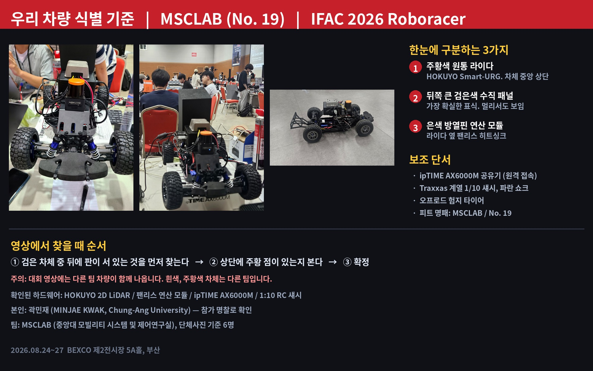
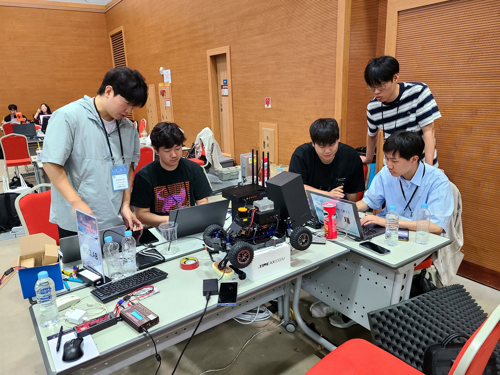

유령 벽 제거
점군 사이 큰 틈을 하나의 벽으로 연결하던 문제를 MaxInlierGap 선분 분할로 해결.
IFAC 2026 · AUTONOMOUS RACING
1:10 스케일 자율주행 경주차의 LiDAR 인지와 Frenet 로컬 경로계획 모듈을 ROS 2 실차 환경에 적용.

01 / ROLE
MATLAB에서 검증된 인지·계획 알고리즘을 Python으로 포팅하고, 실차 시험에서 드러난 장애물 형상과 안전 여유 문제를 개선.
02 / TROUBLESHOOTING
점군 사이 큰 틈을 하나의 벽으로 연결하던 문제를 MaxInlierGap 선분 분할로 해결.
벽과 장애물의 안전 여유를 분리해 좁은 통로가 모두 막히는 현상 완화.
비용이 낮아도 장애물을 스치는 후보를 제외하도록 MinimumClearance 2단계 선택 적용.
개선 기능의 기본값을 MATLAB 원본과 동일하게 두고 기능별 효과를 독립 검증.
03 / EVIDENCE

